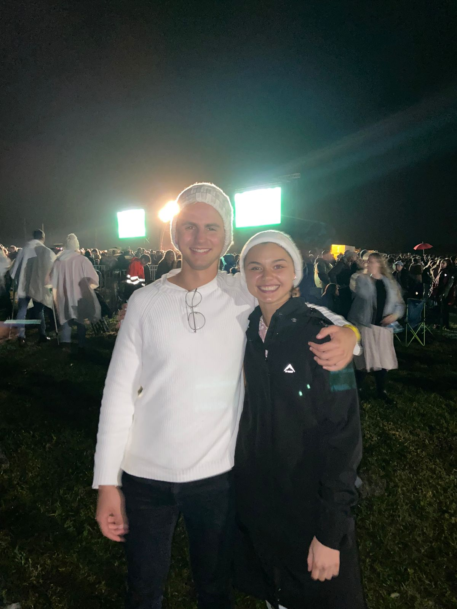
i
18 March 2023
We Met
It began at a Huisfondsdans at Huis Francie van Zijl. One evening, one conversation, and a quiet sense that this was the start of something good.
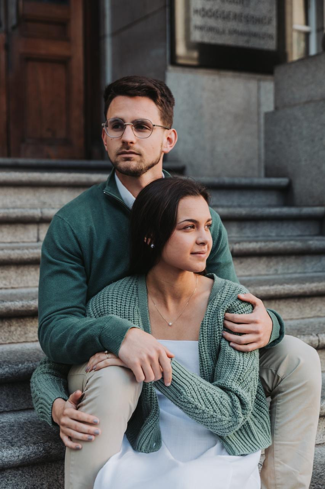
Ons Storie
An excellent wife who can find? She is far more precious than jewels.Proverbs 31 : 10
Long before the first dance, this scripture was quietly shaping Jonty’s prayers, and his heart, toward the woman he hoped to one day call his wife. Our story has always been held by something far greater than the two of us.
A few of our days

18 March 2023
It began at a Huisfondsdans at Huis Francie van Zijl. One evening, one conversation, and a quiet sense that this was the start of something good.
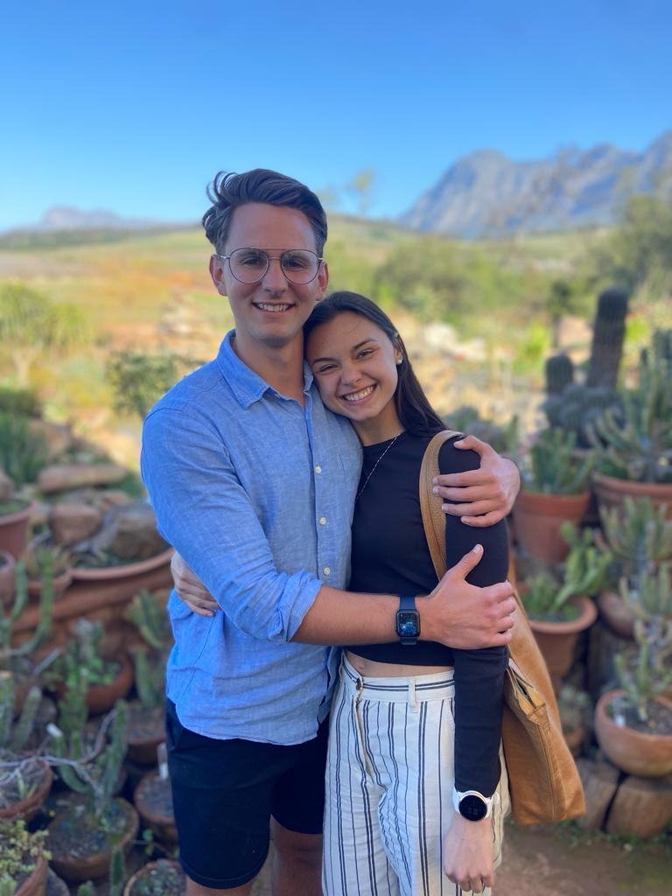
11 May 2023
Our first date was at Vida, a coffee that made us late for class. By winter we were inseparable, and being together simply felt like coming home.
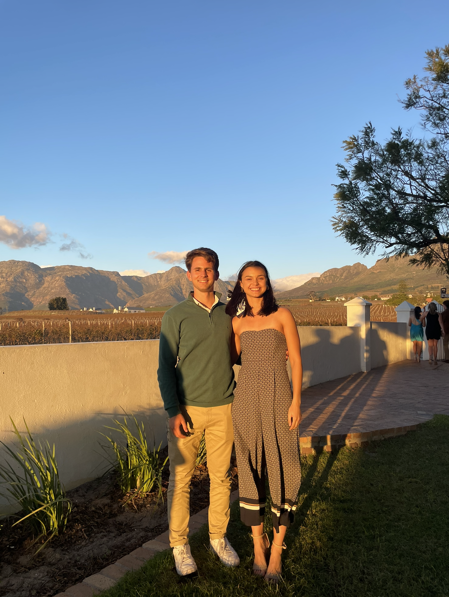
11 May 2024 · The years roll by
A year in, and the newness had settled into something steadier. Birthdays, late nights, and a hundred ordinary evenings we would not trade for anything.
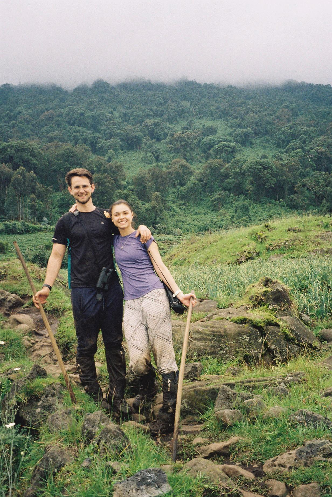
11 May 2025 · The years roll by
Two years of growing up alongside each other, building little routines and big dreams, and an unforgettable adventure overseas through the hills of Rwanda.
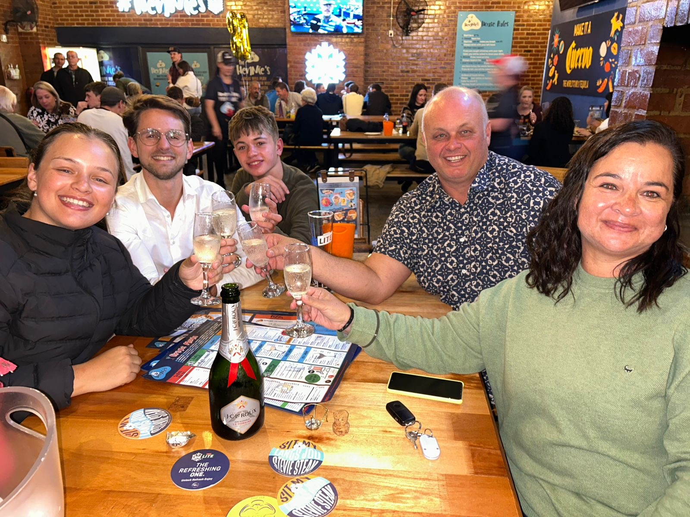
15 May 2025 · A surprise
Behind Karla’s back, and entirely as a surprise, Jonty asked Oom Tobie for his blessing to marry her. Permission granted, and the secret was on.
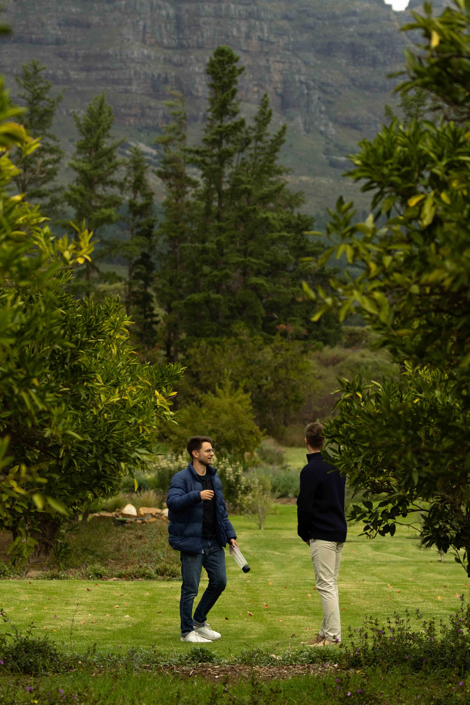
31 May 2025 · Behind the scenes
A few weeks before the big question, Jonty quietly walked the orchard, scheming every detail with help from those in on the secret.
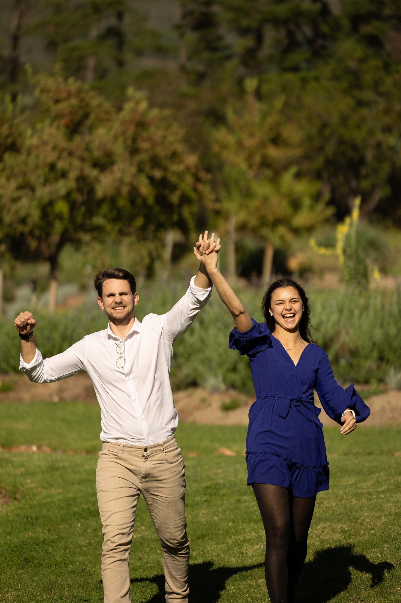
21 June 2025
On a wine farm in Stellenbosch, between the orange trees, Jonty got down on one knee. Through happy tears, Karla said yes.
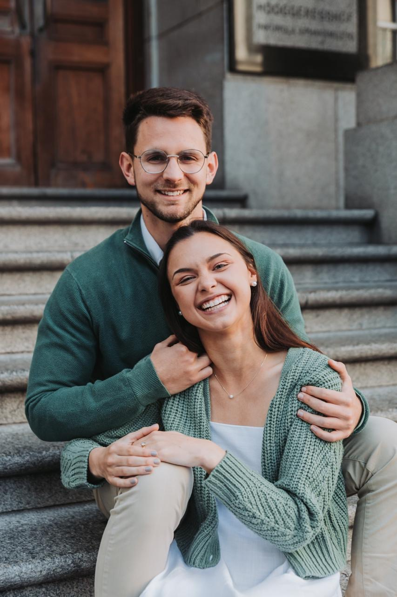
5 December 2026
Beneath the summer skies of the Robertson valley, surrounded by the people we love, we will finally say the words we have been waiting to say.
21 June 2025
An orchard on a Stellenbosch wine farm, a question long in the making, and a celebration that spilled out among the trees.
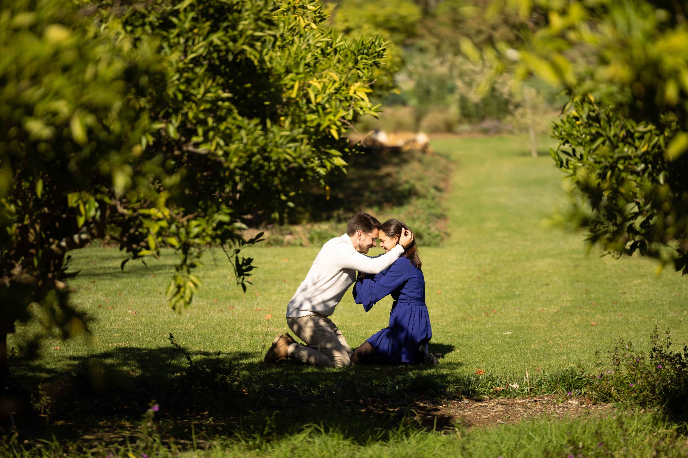
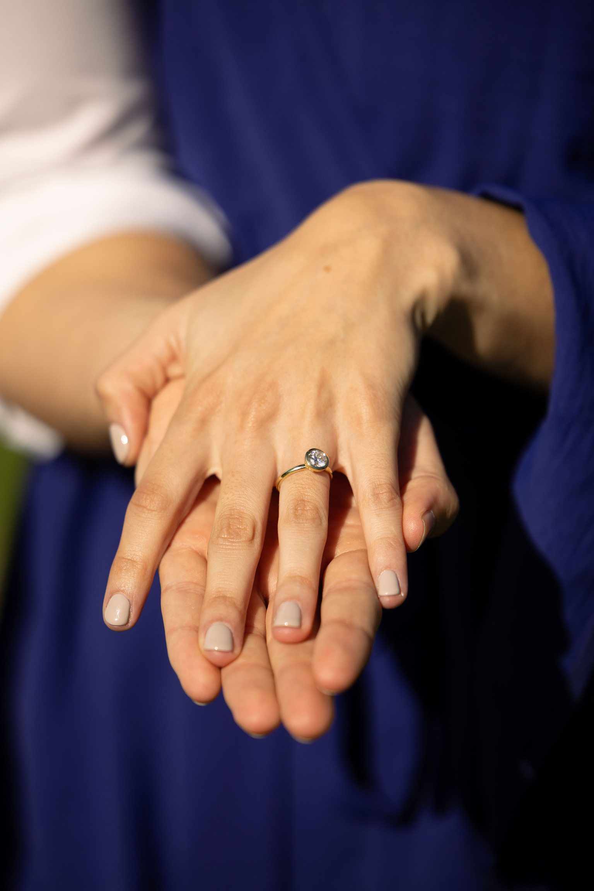
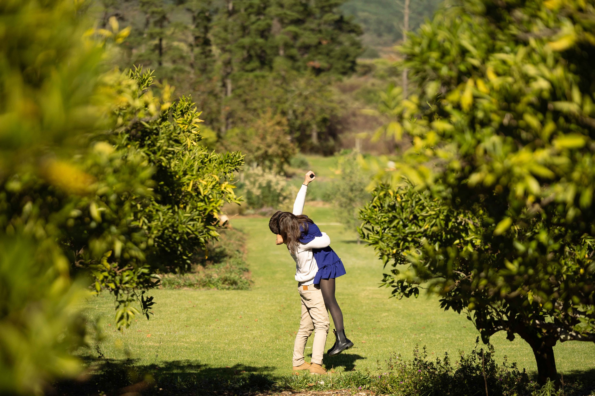


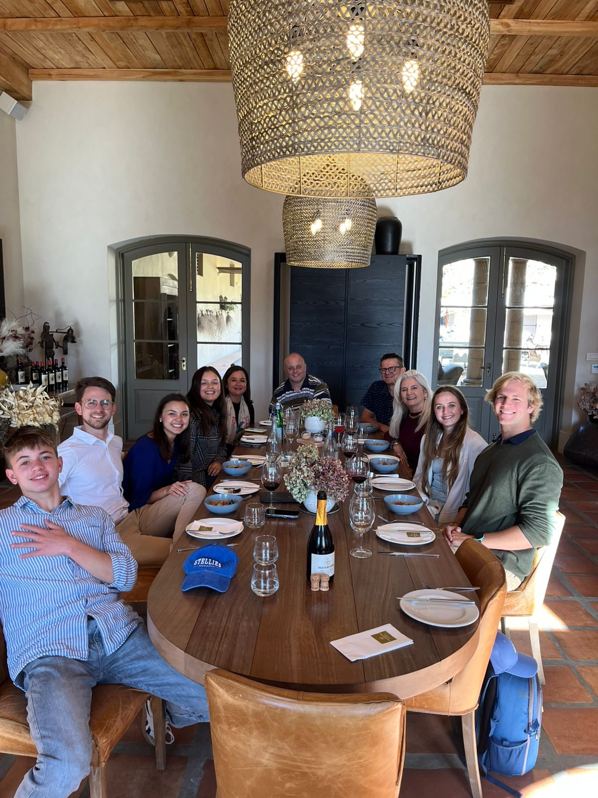
And the best is yet to come
Be part of the next chapter. Let us know you will be there.
RSVP